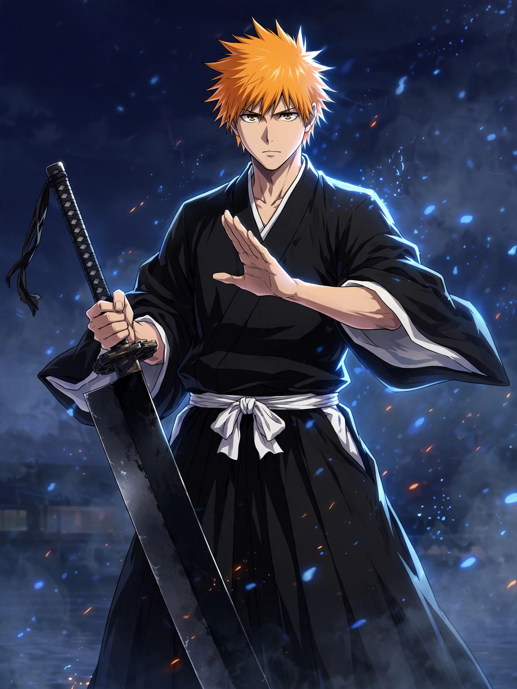

Quick answer
Who is Ichigo Kurosaki?
Ichigo is a high school student with the ability to see ghosts. After a Hollow attack brings him into contact with Rukia Kuchiki, he acquires Soul Reaper powers and takes on the role of Substitute Soul Reaper.
A teenager who can see ghosts becomes a Substitute Soul Reaper after meeting Rukia Kuchiki. Across conflicts that reach the World of the Living, Soul Society and Hueco Mundo, Ichigo keeps taking up his sword for the people who need protecting.
Official Ichigo profile →Character archive →Ichigo wallpapers →
Ichigo is a high school student with the ability to see ghosts. After a Hollow attack brings him into contact with Rukia Kuchiki, he acquires Soul Reaper powers and takes on the role of Substitute Soul Reaper.
Ichigo’s journey stretches across the World of the Living, Soul Society and Hueco Mundo, where he earns the trust of other Soul Reapers. During the Wandenreich invasion, he is forced to confront the truth of his heritage; the official character profile says he still chooses to pick up his sword again to protect everyone.
That choice is the heart of Ichigo’s appeal: he is not chasing a title or an ideal of greatness. When the people around him are in danger, he steps forward, even when the next answer means learning something difficult about himself.
Birthday: July 15 · Zanpakutō: Zangetsu · Affiliation: Substitute Soul Reaper · Height: 181 cm
These details follow the official BLEACH: Thousand-Year Blood War character profile.
The official character page describes Ichigo as a high school student who can see ghosts, becomes a Substitute Soul Reaper after meeting Rukia, and continues fighting to protect those around him. The official series introduction identifies Thousand-Year Blood War as the concluding arc of the BLEACH anime.
This feature is spoiler-light and focuses on official character information. Story details can vary by adaptation and arc.
Start with the official character bio, then visit the character archive to explore previous Dreaming Anime spotlights.
Official Ichigo profile →All character features →Original Dreaming Anime wallpapers created for this character feature.
 Download phone wallpaper
Download phone wallpaper Download desktop wallpaper
Download desktop wallpaper